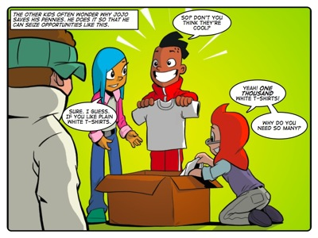
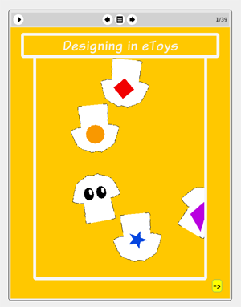

Story: Ts in a Can
Theme: Using information.
Synopsis
Jojo uses his savings to buy plain white t-shirts in bulk. He has a plan to sell them all for a profit so he can buy his dream mountain bike. But when his first day of sales goes badly, Jojo refuses to listen to his friends' suggestions for a change in plan. Jojo's is so focused on the big picture of making enough money to buy his bike that he fails to pay enough attention to the daily details that will earn him his reward. His friends know that he has done no research into what kinds of t-shirts kids would like to buy. Sophie, Tom and Farrah spend time gathering this information and working on designs and packaging based on what they learn. When Jojo sees the results he realises he was wrong to reject their suggestions and their offers to help.
This story is about identifying the kinds of information that will be useful to you in coping with your challenge and then going out and getting that information. Although Jojo shows great entrepreneurial promise, he assumes that the challenge of making money is complete the moment he buys t-shirts cheaply. He fails to recognise that although he has the seed of a good business venture, he needs to do a lot more work before it starts to pay off. And to do that work he needs some very specific information.
Activity
This activity challenges learners to question their partners to find out what kind of t-shirt they would like to wear. Using this information they must then design a t-shirt that they believe their partners would like to wear.
The purpose of the activity is to give learners the chance to gather and interpret information.
In doing this activity we want learners to recognise that there is a link between the information they absorb and the actions that they perform based on what they have learned.

The eToys project: Designing in
eToysIn this project learners use eToys to create T-shirt designs. Jojo shows learners how to write simple scripts for three simple objects to create patterns that emerge out of their combined behaviour. This project offers learners the opportunity to use eToys to create aesthetic designs, which in turn could be used for a practical purpose such as the design on a T-shirt.